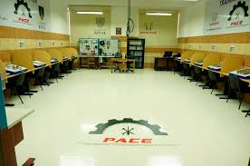
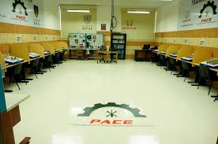

KINAL
Formando Técnicos de Excelencia
Centro Educativo Técnico Laboral
Sobre Nosotros
Fundación Kinal es una obra de educación integral que nace en Guatemala para promover la dignidad de la persona a través del trabajo técnico profesional. Nos enfocamos en jóvenes que buscan transformar su vida y la de su familia mediante una formación de alta calidad.
Nuestras Instalaciones (Desliza para ver más)

 

Formación Técnica
Especialidades en Informática, Mecánica, Electricidad y más, con estándares de industria actuales.
Valores Humanos
No solo formamos profesionales, sino ciudadanos con ética, responsabilidad y espíritu de servicio.